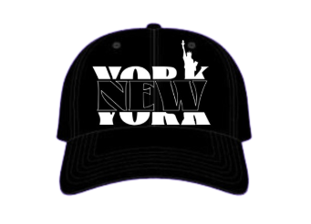
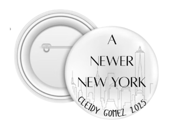
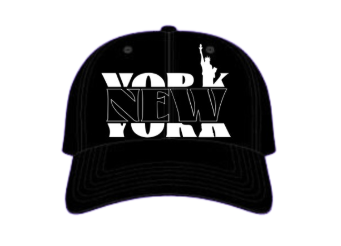
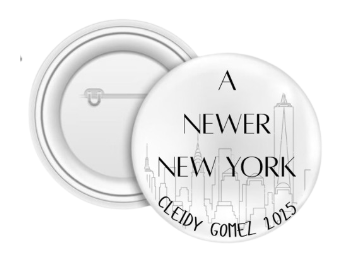

Republican
Candidate Cleidy

Cleidy is a dedicated and passionate individual who has always prioritized leadership and teamwork. With a strong sense of responsibility and a deep commitment to excellence, Cleidy brings integrity and creativity to every project. Her background in design and communication allows her to bridge technical and creative aspects seamlessly.
Hello! I'm the editor for our team, and my primary responsibility is to ensure that all aspects of our project, whether it's design or code, are free from mistakes and errors. I carefully review every detail, making necessary adjustments and providing feedback to ensure the quality of our work is top-notch. In addition to editing, I also serve as a support system for the team, offering guidance and helping resolve challenges that may arise during the development process. My goal is to bring a smooth progression of our game, ensuring that we stay on track and work collaboratively towards a successful outcome.
While building our website, I encountered some bugs that were tricky to fix. For example, it was difficult to figure out how to get the video to play properly. Choosing the right color palette for the website also took a lot of time. While designing the app, I struggled to decide on a clear theme and make sure it looked nice and matched the style we wanted.
I overcame these challenges by collaborating with my team members. Through our discussions, I discovered that Hailey was great at choosing the color palette for both the app and the website, while Angel excelled at designing the app. This teamwork alleviated much of the pressure, allowing me to focus on adding the information and small details to both the website and the app.
I value the opportunity to connect with my team members on a deeper level. Collaborating with them enhances our collective efforts and fosters a positive working environment. Working alongside such dedicated individuals is both fulfilling and motivating.
I faced challenges with time management and staying on track with assignments, which led to increased pressure. This constant stress made it difficult to maintain focus and productivity. Ultimately, I found this experience to be both overwhelming and unfulfilling.
Looking back on the journey of developing both a website and an app was an emotional rollercoaster. There were moments when I felt overwhelmed and considered giving up. However, having supportive team members by my side took away much of the stress and kept me motivated.
Show your support for Cleidy with our exclusive campaign merchandise! From sleek t-shirts to pins and caps, every purchase helps us continue building a strong, united future.
 



Our campaign thrives because of the amazing allies who stand by us. Together, we believe in unity, empowerment, and a better tomorrow. A special thanks to every volunteer, supporter, and community partner who continues to help us grow stronger every day.